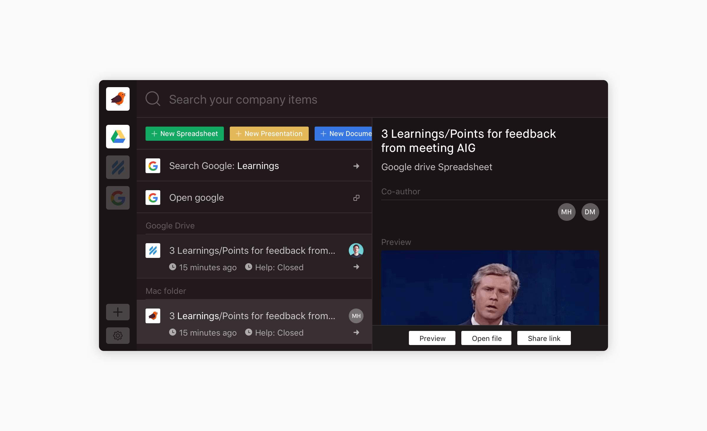
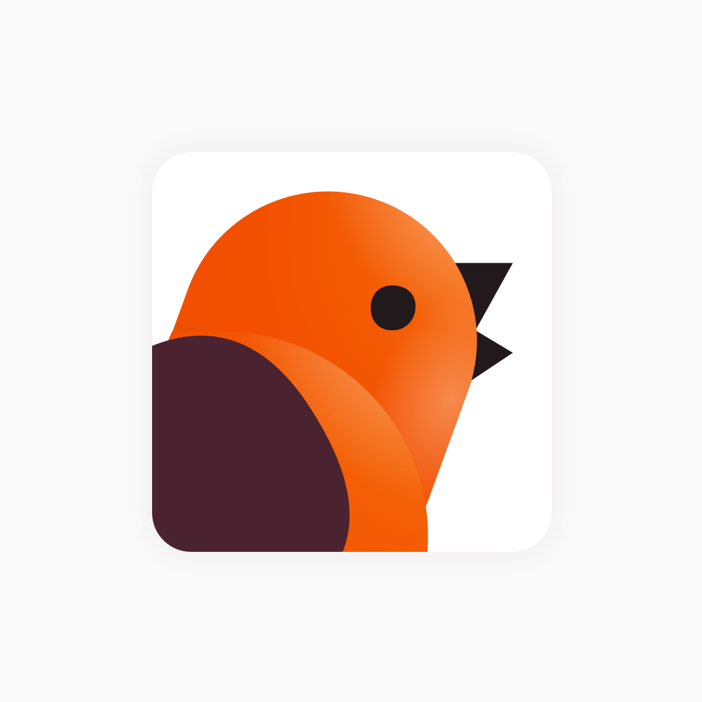

Cuely app
Late 2016 I partnered with Jakob Marovt who at the time was running Cuely.
The app is meant to replace your metasearch on different operating system. Connected to all your favorite apps, Cuely helps you reach your documents, conversations and information quickly.
We planned to brush up Cuely app for marketing launch on various platform. Within a week I broke down the app into components and objects, organize them and style them to have one consistent look and good base for a design system.
I took some time to give his app a bit of personality to stand out. 

The team and service couldn’t find their audience, and the app was shutdown.